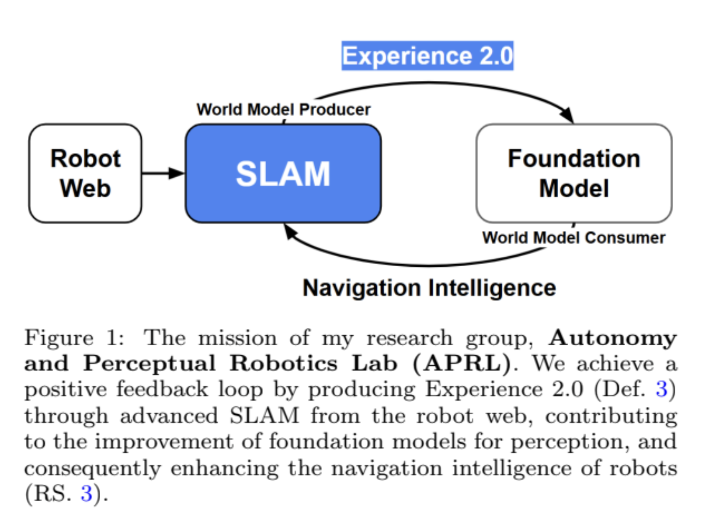
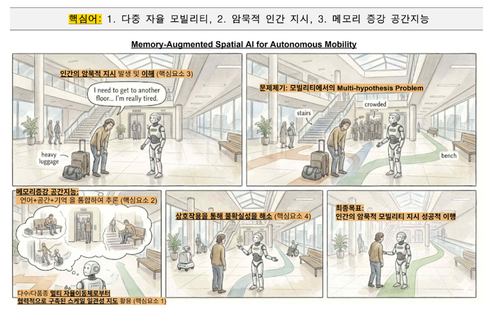
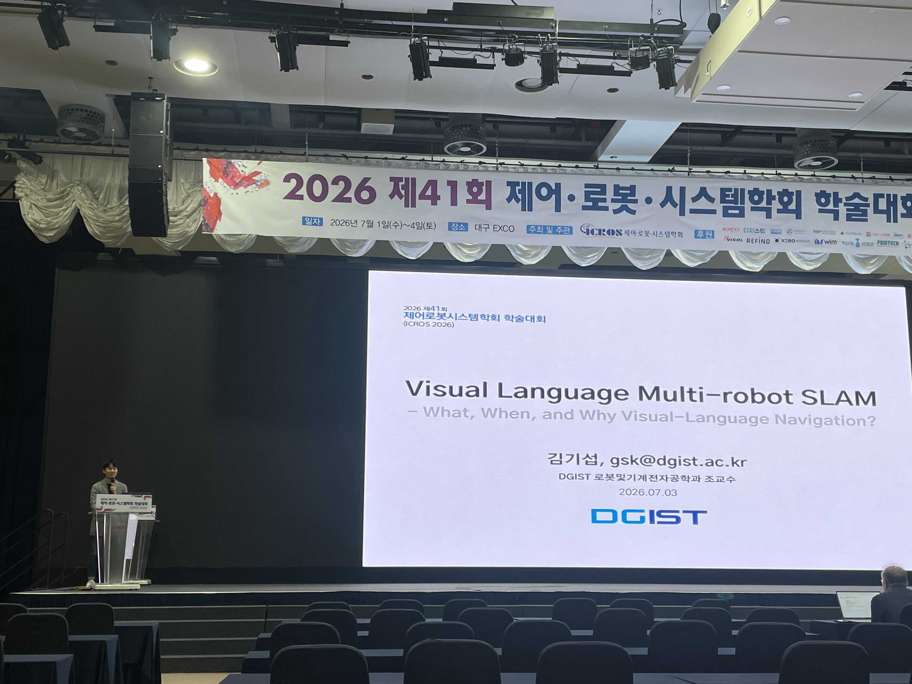

<main class="page">
      <section id="research" class="publications-section research-section">
        <div class="publications-heading">
          <div>
            <h1>Research</h1>
            <p>Current research interests and methodological expertise from APRL.</p>
          </div>
        </div>

        <div class="research-interest-panel">
          <h2 class="publication-year research-interest-heading">Our Current Research Interests</h2>
          <div class="research-interest-grid">
            <article>
              <span>1</span>
              <h3>Spatial Intelligence for Autonomous Robot Navigation</h3>
              <ul>
                <li>SLAM 2.0 for Robot Web era</li>
                <li>Neural map representations</li>
                <li>Human-robot interactive visual-language navigation</li>
              </ul>
            </article>
            <article>
              <span>2</span>
              <h3>Embodied Reasoning and Robot World Models</h3>
              <ul>
                <li>Reasoning capabilities for robots</li>
                <li>Generative AI for mobile robot navigation</li>
                <li>World models in AI</li>
              </ul>
            </article>
          </div>
          <div id="guiding-research-question" class="research-guiding-question">
            <span class="research-question-mark">?</span>
            <div>
              <span class="research-question-label">Guiding research question</span>
              <p class="research-question-intro">Through these directions, we aim to answer questions such as:</p>
              <p class="research-question-text">How can robots leverage the spatial experience accumulated during long-term operation in a task-relevant way?</p>
            </div>
          </div>
        </div>

        <div class="publication-year research-recent-heading">Recent Researches</div>
        <div class="research-recent-list">
          <article>
            <a class="research-recent-visual" href="https://drive.google.com/file/d/1M1U6Llh2SOsDc2hgOX444oZoSnwXaRQZ/preview" data-preview="document" aria-label="Preview APRL 5-Year Research Statement">
              
            </a>
            <div class="research-recent-copy">
              <span>Research plan</span>
              <h3><a href="https://drive.google.com/file/d/1M1U6Llh2SOsDc2hgOX444oZoSnwXaRQZ/preview" data-preview="document">APRL 5-Year Research Statement</a></h3>
              <p>Research plan for 2026-2030, including spatial intelligence and autonomous navigation directions.</p>
            </div>
          </article>
          <article>
            <a class="research-recent-visual" href="https://drive.google.com/file/d/1riZrdBLxpxrBbzPsRFEjUunkNA1d4nul/preview" data-preview="document" aria-label="Preview AIMS Project and Open Position Details">
              
            </a>
            <div class="research-recent-copy">
              <span>Position slide</span>
              <h3><a href="https://drive.google.com/file/d/1riZrdBLxpxrBbzPsRFEjUunkNA1d4nul/preview" data-preview="document">AIMS Project and Open Position Details</a></h3>
              <p>Project overview for multi-robot autonomy, implicit interaction, and memory-augmented spatial intelligence.</p>
            </div>
          </article>
          <article>
            <a class="research-recent-visual" href="assets/research/20260703-giseop-kim-icros2026-young-researcher-award-talk.pdf" data-preview="document" aria-label="Preview Visual Language Multi-robot SLAM invited talk">
              
            </a>
            <div class="research-recent-copy">
              <span>Invited talk (Current Research Topics)</span>
              <h3><a href="assets/research/20260703-giseop-kim-icros2026-young-researcher-award-talk.pdf" data-preview="document">Visual Language Multi-robot SLAM (What, When, and Why Visual-Language Navigation?)</a></h3>
              <p>Date: 2026.07.03 · Event/Session: ICROS 2026 Outstanding Young Researcher Award Presentation</p>
            </div>
          </article>
        </div>

        <div class="publication-year research-method-heading">Our Methodological Expertise</div>
        <div class="research-method-list">
          <article class="research-method-card">
            <a class="research-method-image" href="assets/research/sensor-fusion-navigation.png"></a>
            <div>
              <h2>Sensor Fusion and Large-scale Navigation</h2>
              <p><b>Mission:</b> <a href="https://dgist-slam.github.io/main-building/">map the world</a> with low-cost sensors.</p>
              <ul>
                <li>Enhancing robustness of SLAM and democratizing SLAM cost</li>
              </ul>
            </div>
          </article>

          <article class="research-method-card">
            <a class="research-method-image" href="assets/research/slam-2.png"></a>
            <div>
              <h2>Towards SLAM 2.0</h2>
              <p><b>Mission:</b> Be a SLAM 2.0 <a href="https://gsk1m.github.io/productivity/2023/10/02/being-goto-brand-in-academia.html">problem owner and leader</a>.</p>
              <ul>
                <li>Defining and addressing next-generation SLAM challenges in a pioneering way</li>
              </ul>
            </div>
          </article>

          <article class="research-method-card">
            <a class="research-method-image" href="assets/research/mapping-foundation-models.png"></a>
            <div>
              <h2>Robot Mapping Meets Foundation World Models</h2>
              <p><b>Mission:</b> SLAM helps foundation models, and vice versa.</p>
              <ul>
                <li>Constructing a positive feedback cycle between SLAM as a world data producer and large world models as world data consumers</li>
              </ul>
            </div>
          </article>
        </div>
      </section>
    </main>
